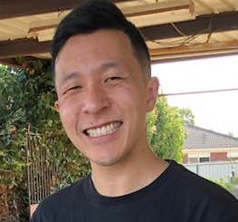

Hello everyone and welcome to my profile page!
My name is Daniel Lay and I am studying two Bachelor of IT subjects at RMIT University.
So, a bit about myself; I am 27 years old, married and a father of two.
I am of East Timorese descent but I was born in Australia, so I am technically a true blue, meat pie eating Aussie!
My parents migrated to Australia in the 80's after the civil war broke out in Timor.
We speak Hakka at home, which an old Chinese dialect and my mother taught me Mandarin from a young age.
The highest education I have achieved to date is my Certificate III in Automotive Mechanical, and I work as a car mechanic.
I am a self-proclaimed geek, I love computer hardware and watching anime.
Something that most people don't know about me is that I am a massive footy head!
I can sit through any AFL match regardless
of the teams playing and have a good old time analysing the game.